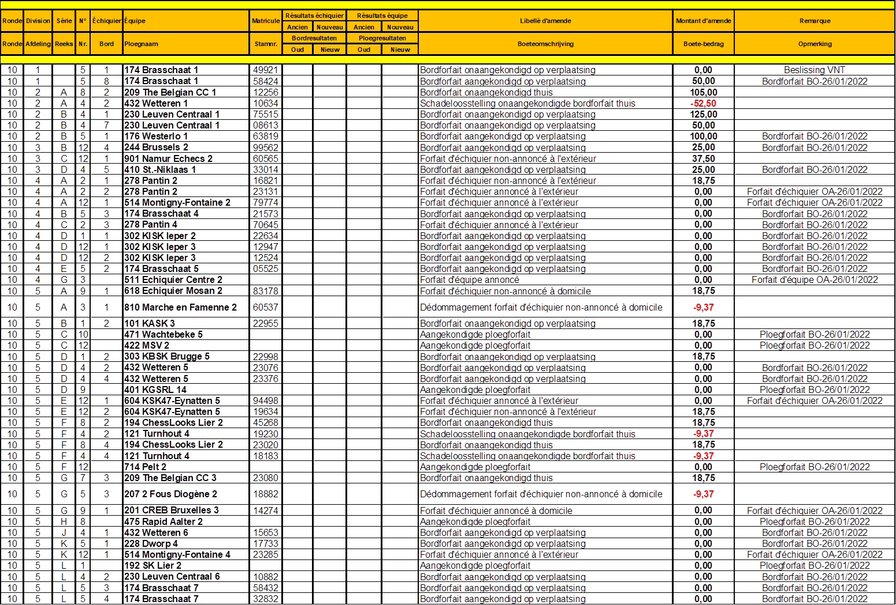
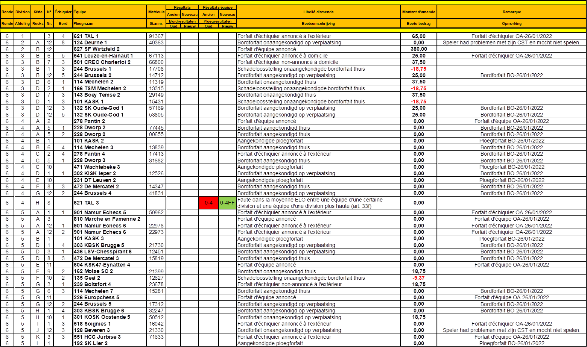

Update 24/03/2022 Luc Cornet

Nationale Interclubs Nationaux 2021-2022 – BOETES – AMENDES
Klik hier voor meer uitleg – Cliquez ici pour plus d’explications
Veuillez ne rien payer avant d'avoir reçu une facture du trésorier.
Gelieve niets te betalen voordat u een factuur van de penningmeester hebt ontvangen.

